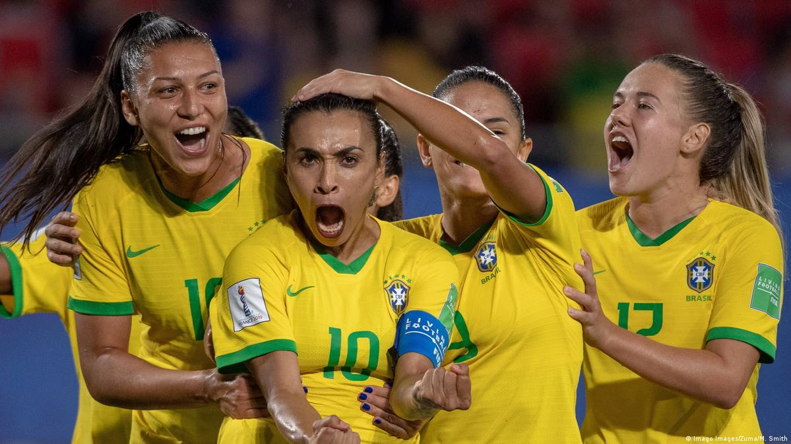
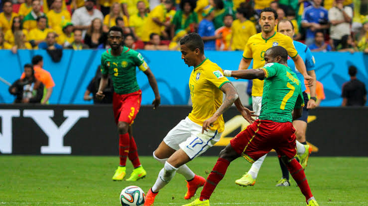
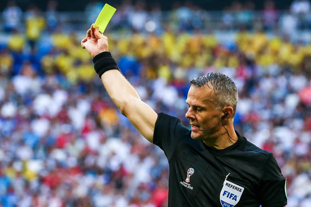
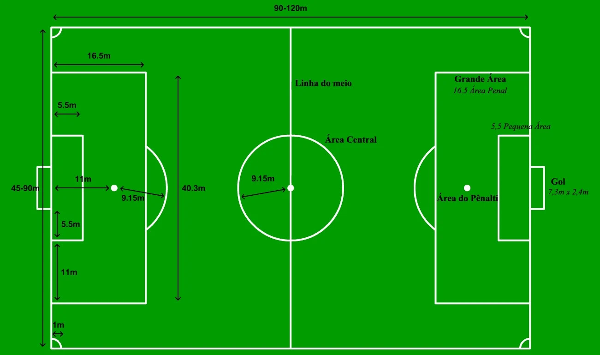

Entendendo o esporte futebol
É disputado por duas equipes, de 11 jogadores que têm como objetivo colocar a bola entre as traves adversárias o maior número de vezes sem usar mãos e braços. Esse objetivo é chamado gol. A meta ou baliza, mais conhecida como trave, é um retângulo formado por duas traves ou postes verticais, perpendiculares ao solo, e uma trave ou travessão paralela ao solo. Ali fica posicionado o goleiro (ou guarda redes), que é o único jogador com permissão para colocar as mãos na bola (apenas dentro da sua área e quando a bola é recuada com o peito ou a cabeça), defendendo o gol. O jogo é vencido pela equipe que marcar um maior número de gols.

Principal entidade do futebol
A FIFA (Federação Internacional de Futebol), com sede em Zurique, na Suíça, é a entidade que regulamenta o futebol no mundo. A partir de 1930 a FIFA passou a realizar de quatro em quatro anos a Copa do Mundo FIFA de futebol, competição internacional que se tornou a mais popular e disputada de todo o mundo depois dos Jogos Olímpicos.

Regras do Futebol
- Cada partida tem 90 minutos e é dividida em dois tempos de 45 minutos cada.
- O jogo é supervisionado por um árbitro.
- É proibido o uso das mãos para o manejo da bola. Podem, entretanto, serem usados os pés, as pernas, o tronco e a cabeça.
- Para evitar que os jogadores do time adversário fiquem apenas na área penal do lado adversário, foi criada a regra do impedimento. Ela consiste em impedir ou invalidar um gol que tenha sido feito por um jogador quando não há pelo menos dois jogadores da outra equipe entre ele a linha de fundo adversária.
- O vencedor da partida é aquele que conseguir fazer o maior número de gols.
- Em caso de desempate, podem ser feitas duas prorrogações de 15 minutos ao final dos tempos.
- Quando um jogador comete faltas, ele pode receber um cartão amarelo ou um cartão vermelho. Se receber dois cartões amarelos ou um cartão vermelho em uma partida, ele é expulso do jogo.
- Caso um jogador execute alguma agressão física sobre um adversário, o juiz deve marcar pênalti a favor do time adversário.
- Quando a bola sai do campo pela linha de fundo, é cobrado escanteio se o último jogador a tocá-la estava na defensiva, e é cobrado tiro de meta se o último jogador a tocá-la estava no ataque. Nesse caso, o escanteio é a favor do time atacante e o tiro de meta, a favor do time da defensiva.

Campo de Futebol
- Arco-penal: Delimitada por uma meia circunferência. Determina a distância a que os jogadores não envolvidos em penalidades devem permanecer durante a cobrança de falta
- Área de meta: Também conhecida como pequena área. Determina os limites da cobrança de tiros-de-meta e de tiros-livres indiretos.
- Área penal: Também conhecida como grande área. Determina o espaço em que é permitido ao goleiro usar as mãos para defender a bola
- Linha Lateral: Delimita o espaço do campo. Caso a bola ultrapasse essa linha, deve ser marcada a falta e deve haver a cobrança de lateral.
- Linha de Meta: Também conhecida como linha de fundo. Delimita o espaço do campo. Quando ultrapassada sem passar pelo gol, é marcada a falta e é cobrado o escanteio ou o tiro-de-meta.
- Círculo Central: Delimita o espaço do toque inicial da bola.
- Ponto Central: É uma marca, no centro do círculo central, onde a bola deverá ficar para receber o primeiro toque.
- Linha de meio-campo: Divide o campo ao meio, delimitando as áreas de cada equipe.
- Tiro penal: Também conhecida como marca do pênalti. Determina a distância para a cobrança de pênaltis.

Referência: Wikipédia: Portal Futebol
Página inicial
Basquete
Vôlei
Questionário
Jogo